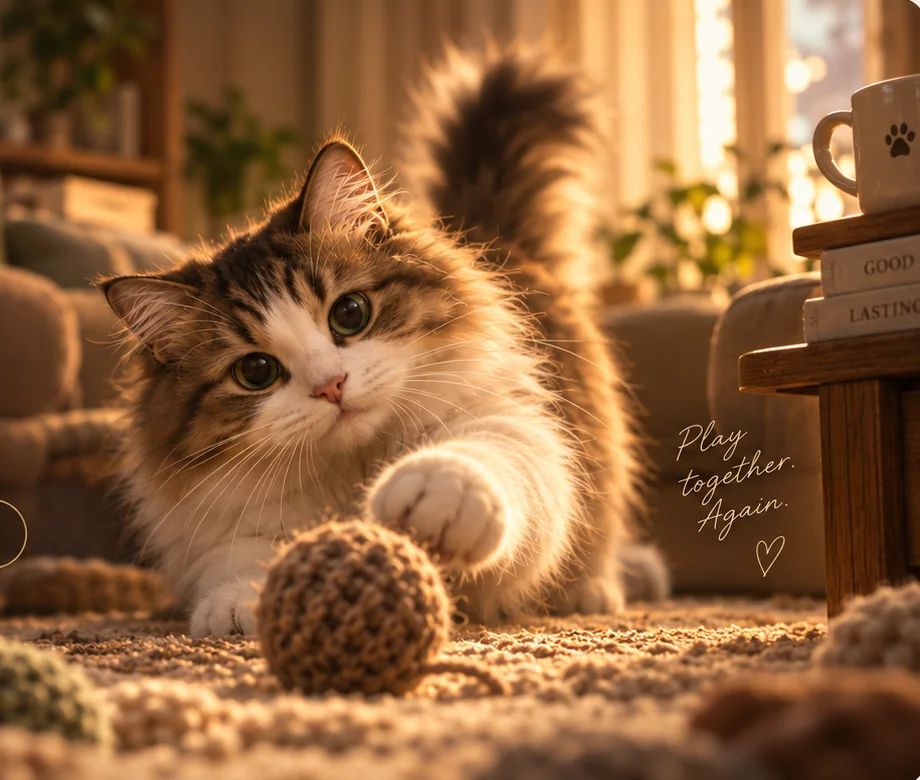
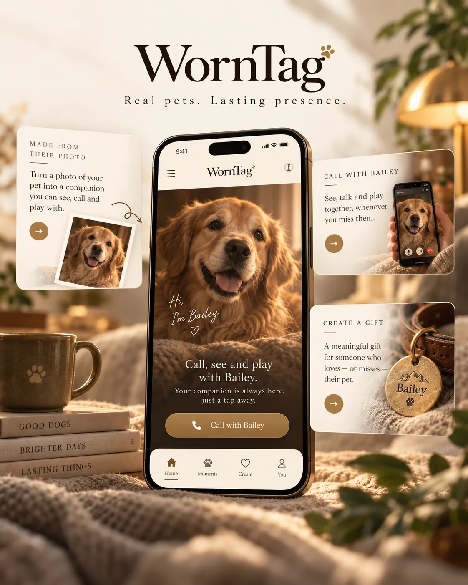
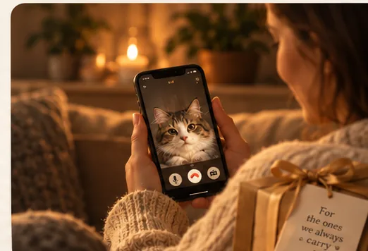
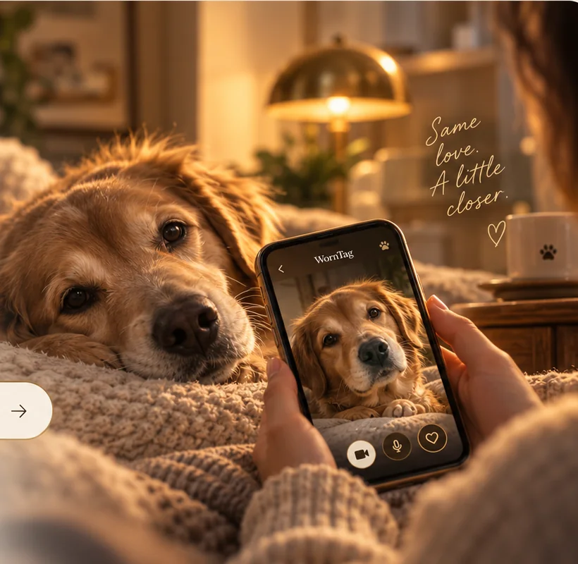

01
Choose a favourite photo
Begin with a clear view of the face, coat and markings you know best. Uploads are not available on this site.
WornTag ✦
A familiar face, with a little more room to play. WornTag is creating a personal digital companion inspired by your pet’s photo.
A thoughtful digital keepsake, made with care.

Made from their photo
WornTag is being designed around one simple feeling: “That’s them.” The colour, markings and familiar look of one particular pet should matter more than the technology used to create a digital likeness.
How it works
The experience we are working toward, from one favourite photo to a companion you can spend time with.
Begin with a clear view of the face, coat and markings you know best. Uploads are not available on this site.

The goal is to carry through the look and small details that make your pet recognisable.

Call, play and watch a digital companion respond in a small, welcoming space.
These images show the direction of the experience. WornTag is in development; the finished app may look and work differently.
Recognition is the product
WornTag is being shaped around the little details that make one animal unmistakable: face, colour, markings and familiar presence. A digital likeness is not the animal itself.
Learn how WornTag works →
A companion for your own reasons

For your pet today
A familiar coat pattern, favourite expression or the way they turn toward you.

For an old photograph
A digital keepsake can offer a new way to revisit a photograph; it cannot bring an animal back.

For someone you love
Explore an idea for a thoughtful gift inspired by the pet someone knows by heart.

Why WornTag exists
What if a photograph could inspire a small, interactive digital keepsake, while still respecting the real animal and the memories that belong to you?
Read our storyA note on availability
WornTag is in development and is not available to download. If a small beta opens, you can ask to hear about it—there is no confirmed date or guaranteed place.
Ask for a beta invitation